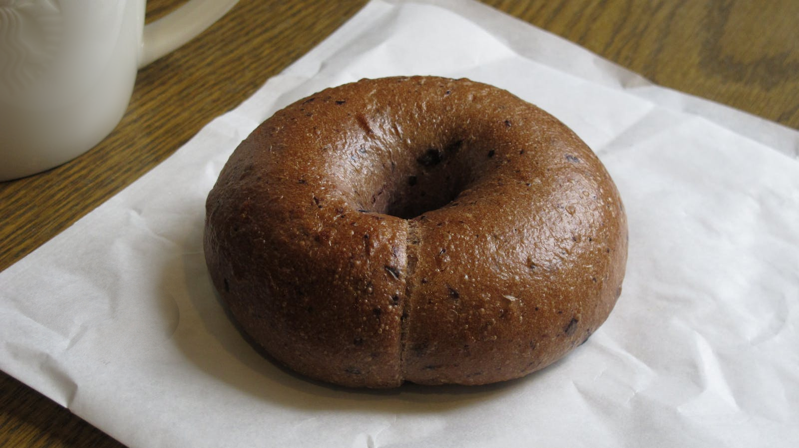

01
サンセットセサミ
香ばしいセサミに、ふんわり軽いクリームチーズとハーブ。太平洋の風を感じる定番です。


Featured
香ばしいセサミに、ふんわり軽いクリームチーズとハーブ。太平洋の風を感じる定番です。

温かいエブリシングベーグルに、アボカド、レモン、スプラウト、チリオイル、フレークソルトを重ねて。

じっくり抽出した、チョコレートのようにまろやかな味わい。澄んだ氷に注いで仕上げます。

California Coastal
少量ずつ焼き上げ、いつでもコーヒーを用意し、明るく気取らないカリフォルニアの朝に似合う空間をつくっています。
Read Our Story